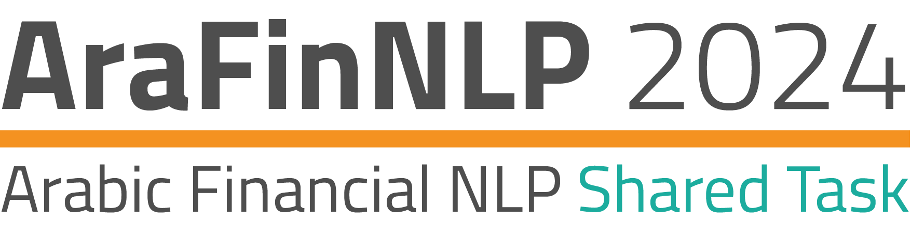
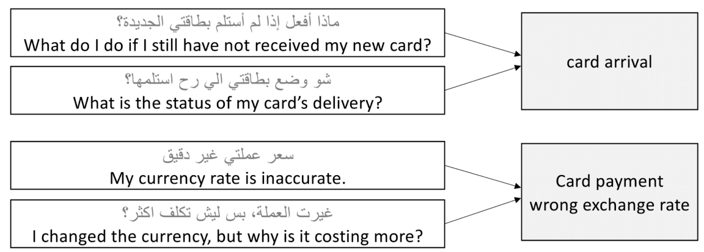

Follow @xREGISTRATION
Registration is now open until 5 April 2024 29 April 2024. To register your team please use this link.
For further details you can reach us by Slack or AraFinNLPSharedTask2024@gmail.com.
INTRODUCTION
The Arabic Financial NLP (AraFinNLP) shared task underscores the crucial role of Financial Natural Language Processing (NLP) in the Arab World. This significance is highlighted by the robust growth witnessed across Middle Eastern stock markets, with a broad range of diverse sectors contributing to this expansion (Zmandar, El-Haj, and Rayson, 2021; 2023). This growth, spanning across various countries, reflects the region's dynamic financial landscape, attracting global attention and investment. As these markets continue to evolve, the need for advanced Arabic NLP tools becomes imperative to address local linguistic nuances and cater to the global financial community engaging with these markets. The advancement of Arabic NLP capabilities within the finance domain is essential for the effective analysis and interpretation of financial data.
In the AraFinNLP shared task, we propose two subtasks aiming at advancing Financial Arabic NLP: Subtask-1, Multi-dialect Intent Detection, and Subtask-2, Cross-dialect Translation and Intent Preservation, in the banking domain. These subtasks are crucial for interpreting and managing the diverse and complex banking data prevalent in Arabic-speaking regions. By accurately detecting intent in financial communications, particularly in bots, across various Arabic dialects, these technologies can significantly enhance customer service, and automate query handling. This ensures inclusivity and efficiency in catering to a linguistically diverse customer base. The Dialectical Translation aspect is particularly significant given the linguistic diversity in the Arab world. It ensures that NLP models are not only accurate when dealing with Modern Standard Arabic (MSA) but also effective across diverse Arabic dialects. This advancement will open up new applications in areas like automated customer support, real-time financial news analysis, and enhanced accessibility for diverse Arabic-speaking populations, making financial services more inclusive and efficient.
The advancements in Intent Detection and Dialectical Translation developed for AraFinNLP hold the potential for transformative applications across various sectors. The advancements in Intent Detection and Dialectical Translation from AraFinNLP have wide-reaching potential across sectors. They enhance patient communication in healthcare, improve accessibility in legal and governmental services, support inclusive education, and make customer service more responsive for Arabic speakers. By bridging language barriers, these technologies promise to boost efficiency and accessibility across various services, showcasing the broader impact of NLP beyond finance.
For both subtasks-1 and subtask-2, we propose to use ArBanking77 (Jarrar et al., 2023), a dataset obtained by translating the English Banking77 dataset (Casanueva et al., 2020) into MSA and Palestinian Arabic. This dataset is being expanded in this shared task to include a set of Arabic dialects in addition to Palestinian. ArBanking77 includes a substantial collection of 31,404 queries categorised into 77 distinct intent classes, encompassing a broad spectrum of banking-related inquiries and requests. This diversity and scale make ArBanking77 an ideal foundation for training and evaluating NLP models, particularly in understanding and processing banking-specific communications in Arabic.
SHARED TASK
Subtask 1: Multi-dialect Intent Detection
Subtask-1 involves Cross-dialect Intent Detection in the banking domain. This subtask is centred around developing models that can accurately classify customer intents from queries in various Arabic dialects. Participants will be provided with a dataset containing queries in English and their corresponding MSA and Palestinian translations. The challenge lies in training models that not only understand MSA and Palestinian but are also adept at interpreting an array of Arabic dialects, such as Gulf, Levantine, and North African. This subtask aims to foster the creation of NLP tools that can seamlessly interact across the diverse linguistic landscape of the Arab world, enhancing customer experience and operational efficiency in the banking sector. The evaluation process for this subtask, combined with the second subtask of Dialectical Translation for Intent Detection, will be designed to comprehensively assess the effectiveness of these models in a real-world, multi-dialectal context.

Subtask-1 requires the development of models capable of discerning the specific intent behind customer queries presented in various Arabic dialects. Figure 1 illustrates examples of how different customer statements, despite their varying expressions, align with distinct intent categories such as “card arrival” or “card payment/wrong exchange rate”. Participants will utilise this framework to train models that can reliably interpret the intent from a given input statement in several Arabic dialects, demonstrating the models' versatility and accuracy across the rich tapestry of Arabic dialects.
Participants will then evaluate their solutions on a test set comprising a mix of different Arabic dialects and MSA. This will enable them to train models capable of reliably interpreting intent from these varied linguistic expressions in a cross-dialectal context. This approach ensures that the models developed are robust and adaptable to real-world scenarios where dialectal variations are common.
For subtasks 1 and 2, participants are encouraged to leverage a wide range of online resources suitable for Arabic NLP tasks. Participants have the freedom to incorporate diverse online resources to enhance their models further, fostering a broader exploration of methodologies and potentially leading to more innovative solutions in intent detection and dialectical translation within the banking domain and beyond.
Subtask 2: Cross-dialect Translation and Intent Preservation
Subtask-2 focuses on the translation from MSA to various Arabic dialects: Palestinian, Saudi, Tunisian, and Moroccan, with the Palestinian dialect provided as a training set. The objective is to retain the original intent in the translated dialects, ensuring that the intent detection is as effective as the MSA examples. This subtask will test the ability of models to adapt MSA banking queries into dialectal Arabic while preserving the semantic integrity, crucial for accurate intent classification, despite the potential complexities introduced by dialectal variations.
In Subtask-2, participants will receive a parallel dataset containing banking queries in both MSA and Palestinian Arabic, and their associated intents. The subtask at hand is to accurately translate these queries into the following Arabic dialects: Palestinian, Saudi, Tunisian, and Morocca. Participants will use the intent labels to examine if the resulting translations' intents are preserved and aligned with the original MSA queries.
For the evaluation in subtask-2, participants will be given queries in MSA Arabic to translate and they will need to provide translations for each of the four dialects (Palestinian, Saudi, Moroccan, and Tunisian). The evaluation will focus on the quality of these translations, checked against a reference dataset. Additionally, participants will be asked to assess whether the correct intent is preserved in the translated queries. Standard translation metrics will be used to evaluate the translation output, namely BLEU (Papineni et al, 2012) and ChrF++ (Popović, 2017). This subtask will test the generative capabilities of the models in producing accurate translations in different Arabic dialects in the financial domain.
For instance, a query in MSA: "ماذا افعل إن لم أستلم بطاقتي الجديدة؟" with the intent “card arrival” would need to be translated into Moroccan as “شنو ندير إلا ماوصلتنيش لاكارط جديدة ديالي؟”, into Saudi, as in “وش أسوي إذا ما استلمت بطاقتي الجديدة؟”, and as “آش نعمل كان ما جاتنيش كارطتي الجديدة؟” into Tunisian.
In Subtask-2, the participants' ingenuity in creating translations that not only communicate the same intent but also resonate with the cultural and linguistic subtleties of each Arabic dialect will be pivotal. Successful models from this subtask will demonstrate a nuanced understanding of language variation, setting a new standard for domain-specific dialectal Arabic NLP and potentially unlocking new avenues for machine translation and cross-dialect communication in the broader NLP community.
Evaluation
The evaluation for subtask-1 and subtask-2 of AraFinNLP will be conducted through CodaLab, providing a structured and accessible platform for participants. For subtask-1, the F-measure (F1 score) will assess intent prediction accuracy. The test set will feature a mix of various Arabic dialects and MSA. For subtask-2, participants will translate MSA or Palestinian Arabic queries to the three target dialects, focusing on translation quality and intent preservation, evaluated against a reference dataset. Participants can also leverage resources like the training code available on GitHub https://github.com/SinaLab/ArBanking77 and Hugging Face https://huggingface.co/SinaLab/ArBanking77 . This comprehensive approach ensures a thorough evaluation of the models' linguistic accuracy and semantic understanding across dialects.
IMPORTANT DATES
- February 24, 2024: Shared task announcement.
- March 1, 2024: Release of training and development datasets.
- April 5, 2024 April 29, 2024: Registration deadline.
- April 10, 2024: Test set made available.
- May 03, 2024: Codalab test system submission deadline.
- May 15, 2024: Shared task papers due date.
- June 17, 2024: Notification of acceptance.
- July 1, 2024: Camera-ready papers due.
- August 16, 2024: ArabicNLP conference.
Organising Committee
- Mo El-Haj, Lancaster University, United Kingdom
- Houda Bouamor, Carnegie Mellon University, Qatar
- Saad Ezzini, Lancaster University, United Kingdom
- Ismail Berrada, Mohammed VI Polytechnic University, Morocco
- Sanad Malaysha, Birzeit University, Palestine
- Mohammed Khalilia, Birzeit University, Palestine
- Mustafa Jarrar, Birzeit University, Palestine
- Sultan Almujaiwel, King Saud University, Saudi Arabia
References
Iñigo Casanueva, Tadas Temčinas, Daniela Gerz, Matthew Henderson, and Ivan Vulić. 2020. Efficient Intent Detection with Dual Sentence Encoders. In Proceedings of the 2nd Workshop on Natural Language Processing for Conversational AI, pages 38–45, Online. Association for Computational Linguistics.
Mustafa Jarrar, Ahmet Birim, Mohammed Khalilia, Mustafa Erden, and Sana Ghanem. 2023. ArBanking77: Intent Detection Neural Model and a New Dataset in Modern and Dialectical Arabic. In Proceedings of ArabicNLP 2023, pages 276–287, Singapore (Hybrid). Association for Computational Linguistics.
Papineni, K., Roukos, S., Ward, T., & Zhu, W. J. (2002, July). Bleu: a method for automatic evaluation of machine translation. In Proceedings of the 40th annual meeting of the Association for Computational Linguistics (pp. 311-318).
Nadhem Zmandar, Mo El-Haj, and Paul Rayson. 2023. FinAraT5: A text-to-text model for financial Arabic text understanding and generation. In Proceedings of the 4th Conference on Language, Data and Knowledge, pages 262–273, Vienna, Austria.
Nadhem Zmandar, Mo El-Haj, and Paul Rayson. 2021. "Multilingual Financial Word Embeddings for Arabic, English, and French," 2021 IEEE International Conference on Big Data (Big Data), Orlando, FL, USA, 2021, pp. 4584-4589, doi: 10.1109/BigData52589.2021.9672070.
Maja Popović. 2017. chrF++: words helping character n-grams. In Proceedings of the Second Conference on Machine Translation, pages 612–618, Copenhagen, Denmark. Association for Computational Linguistics.